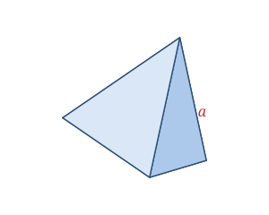

A regular tetrahedron is a solid made of four identical equilateral triangles. It is the simplest of all polyhedra — you cannot build a closed solid with fewer than four faces — and one of the five Platonic solids. Every edge has the same length a, and it looks the same no matter which face you rest it on.
You'll meet the tetrahedron as the d4 die in tabletop games, in the molecular shape of methane (CH₄), and in the caltrop and pyramid-style climbing frames.
A regular tetrahedron is defined by a single edge length a.
| Faces | 4 (equilateral triangles) |
|---|---|
| Edges | 6 |
| Vertices | 4 |
| Edge length | a |
As a Platonic solid it satisfies Euler's formula: V − E + F = 4 − 6 + 4 = 2.
Volume V = a³ ⁄ (6√2)
Surface area SA = √3 · a²
Height H = a·√(2⁄3)
Take a regular tetrahedron with edge a = 4.
V = a³ ⁄ (6√2) = 64 ⁄ (6√2) ≈ 7.54
SA = √3 · a² = √3 × 16 ≈ 27.71
Height = a·√(2⁄3) = 4 × 0.8165 ≈ 3.27
The tetrahedron is the only Platonic solid where every vertex is directly opposite a face rather than another vertex — it is its own "dual," meaning joining the centers of its faces produces another tetrahedron.